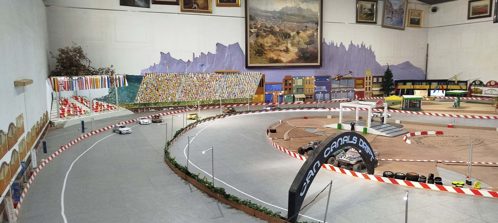

🏁 El circuit
Un espai pensat per gaudir del drift RC, practicar traçades i compartir l'afició.
Un circuit privat dedicat als cotxes RC de drift, creat per compartir la nostra passió.
Un espai per gaudir de la conducció, millorar la tècnica i compartir bons moments amb altres aficionats.
Veure fotos del circuit →Can Canals Drift és un circuit privat dedicat als cotxes radiocontrol de drift, amb un traçat cuidat i detalls realistes per viure l'experiència del drift en un ambient únic.
Un espai pensat per gaudir del drift RC, practicar traçades i compartir l'afició.
El circuit és privat, però hi poden venir altres aficionats amb autorització prèvia. Contacta amb nosaltres abans de venir.
Ens apassionen els cotxes teledirigits de drift, la conducció de precisió i la personalització. Aviat compartirem més imatges dels nostres cotxes.

Una vista del nostre circuit. Properament hi afegirem més fotografies i vídeos.
Vols venir a conèixer Can Canals Drift? Les visites són amb autorització prèvia. Contacta amb els responsables del circuit per acordar una visita.
Properament publicarem aquí el nostre canal de contacte.